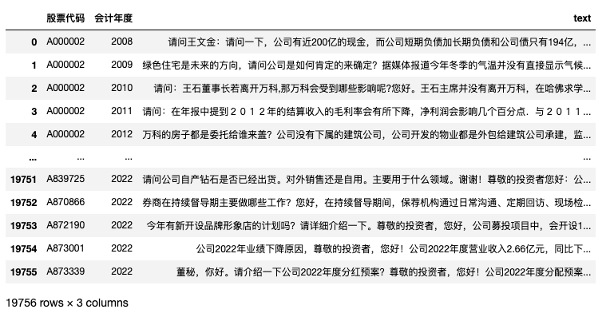

最近几个月没怎么分享长技术文，正好昨天分享的付费数据集涉及到一篇论文，感觉用到了很多Python的地方，就想着做一期。这篇论文的Python实现，技术要点有两个部分
- 「构建词典」； 训练word2vec预训练语言模型，并使用该模型扩展出前瞻性词典集
- 「算前瞻性指标」； 根据前瞻性词典集,统计每个企业业绩说明会内的前瞻性词在总词数中的比例
这两部分，分别对应本文 「二、实验-构建词典」、「三、计算前瞻性」。
内容较长， 可能对初学小白不友好。 学完大邓课程「Python实证指标构建与文本分析」的同学，阅读起来会轻松一些。
许帅,邵帅,何贤杰.业绩说明会前瞻性信息对分析师盈余预测准确性的影响——信口雌黄还是言而有征[J].中国管理科学:1-15.
摘要:本文以2007—2020年上市公司业绩说明会为背景，研究前瞻性信息披露对分析师预测的影响，发现业绩说明会中的前瞻性信息可以显著提升分析师盈余预测准确性。公司的信息不对称程度越高，前瞻性信息对分析师预测准确性提升越多。分析师专长工作经验越丰富，具备更强的信息捕捉能力，可以更好地吸收与理解业绩说明会中的前瞻性信息，做出更准确的预测。进一步，本文对前瞻性信息影响分析师预测的路径进行了讨论，认为前瞻性信息可能通过吸引分析师和机构投资者调研，增进分析师对上市公司经营状况的了解，进而提升盈余预测准确性。此外，本文发现，前瞻性信息中业绩相关类信息因具有更高的可信度，且与盈余因子直接相关，能够显著提升分析师盈余预测准确性。本研究为管理层披露与分析师的互动研究提供了增量证据，研究结果支持了业绩说明会有效性，对未来监管部门制定相关信息披露政策提供依据和建议。
一、前瞻性指标衡量
本文关注业绩说明会中前瞻性信息披露的比重， 借鉴Li [5] 、Muslu等 [6] 和马黎珺等 [14] 对前瞻性信息的定义， 采用 “ 词袋法 ” 构建前瞻性 指标， 运用Python软件中jieba中文分词技术统计在问答阶段前瞻性词汇词频占业绩说明会文本总词频（去除停用词）的比例。 同时， 手工剔除了诸如“请关注后续公告”、“详见以后公告”等不具备实质性前瞻性信息的词频。
在词典的选取上， 本文前瞻性词典集借鉴胡楠和薛付婧 [15] 的种子词汇， 为了保证词汇的全面性， 还将所有种子词导入到开源分析工具 word2vec中， 并在业绩说明会语料库中寻找与种子词内容接近程度最高的词汇，其中包含（1） 管理团队的预测，譬如“计划/预计/预测”等表 述；（2）出现未来时点的表述， 譬如“未来/以 后/明年/下半年”等表述；（3）暗示企业即将发 生的动作， 譬如“有望/后续”等表述， 共计 174个前瞻性词汇（详见附录2）。前瞻性指标比重越大，表明公司的前瞻性信息披露越多。
二、实验-构建词典
2.1 整理数据
把 数据集 | 84w条业绩说明会问答数据(2005-2023)汇总到一个txt文件内。为了保证问答上下文一致， 问答要放在相邻处。 可能需要安装
pip3 install openpyxl
pip3 install pandas
import pandas as pd
df = pd.read_excel('业绩说明会问答05-23.xlsx')
df['text'] = df['提问内容']+df['回答内容']
df.dropna(subset=['text'], inplace=True)
df.head()
with open('业绩说明会05-23.txt', 'a+', encoding='utf-8') as f:
#为了保证问答上下文一致， 问答要放在相邻处
text = ''.join(df['text'].to_list())
f.write(text)
2.2 训练word2vec
一般都是使用gensim库，对 「业绩说明会05-23.txt」 数据集进行训练，我已经封装到的cntext库内。
pip3 install cntext==1.8.6
import cntext as ct
import os
#Init W2VModels. Support English and Chinese
model = ct.W2VModels(cwd=os.getcwd(),
lang='chinese') #corpus data w2v_corpus.txt
#训练结束后，「业绩说明会05-23.100.6.bin」会出现在「output/Word2Vec」文件夹内
model.train(input_txt_file='业绩说明会05-23.txt',
model_name='业绩说明会05-23.100.6.bin')
需要注意， output/word2vec文件夹内会同时含有
- 业绩说明会05-23.100.6.bin
- 业绩说明会05-23.100.6.bin.vectors.npy
两个文件都不要删除， 这些是预训练词向量文件。
2.3 扩展词典
根据前瞻性研究需要，整理了一些种子词
seedwords = ['计划', '预计', '未来', '目标', '可能', '如果', '机遇', '预期', '挑战', '预测', '今后', '目的', '契机', '前景', '希望', '展望', '相信', '愿景', '期待', '明年', '期望']
- 导入word2vec预训练语言模型文件 业绩说明会05-23.100.6.bin
- 寻找与种子词语义最相似的n个词。
- 经过人工检查，剔除n个词中与 前瞻性 无关的词语，最终得到 前瞻性词典(论文中是174个词)。
但是，经过大邓测试发现业绩说明会训练得到的业绩说明会word2vec(05-23.100.6.bin)模型表现很差。
之前大邓用01-21年管理层讨论与分析训练过一个word2vec(mda01-21.200.6.bin)，
在这次前瞻性扩展词任务中，mda01-21.200.6.bin表现要远好于05-23.100.6.bin。
from gensim.models import KeyedVectors
def load_w2v(w2v_path):
"""
Load word2vec model
Args:
w2v_path (str): path of word2vec model
Returns:
model: word2vec model
"""
print('Loading word2vec model...')
model = KeyedVectors.load(w2v_path)
return model
wv = load_w2v('Embeddings/业绩说明会05-23.100.6.bin')
wv2 = load_w2v('Embeddings/mda01-21.200.6.bin')
Loading word2vec model...
Loading word2vec model...
#词汇量
print(len(wv.index_to_key))
print(len(wv2.index_to_key))
198776
789539
#查询某词的词向量
wv.get_vector('创新')
#查询多个词的词向量
#wv.get_mean_vector(['创新', '研发'])
array([ 0.43675017, 0.74739504, 3.3765798 , -0.29287583, 0.40125442,
0.9364979 , 0.62465197, 0.06480039, 0.12256158, -2.0735328 ,
-0.256066 , -1.7680115 , -0.8514873 , -0.756108 , 1.3441261 ,
-0.18098126, 2.7290103 , -4.6596766 , 0.4046495 , -4.0644083 ,
0.6022293 , 1.3569978 , 1.0036035 , 0.06123297, -2.0733726 ,
2.2704456 , -1.2935334 , -0.2855776 , 1.588003 , 1.5027634 ,
2.0897112 , -0.8861778 , 0.4014722 , -0.41474393, -1.5390201 ,
0.23899865, -0.9823706 , -2.986944 , -2.6887195 , -2.2386284 ,
0.04810223, 1.3241886 , -0.71262985, -0.8015585 , 1.5249555 ,
-3.611584 , -1.4187033 , -1.6014036 , 0.816903 , 3.1821172 ,
-1.7302881 , -0.8280679 , -1.2833163 , 0.65565586, -0.8857021 ,
2.098562 , 1.4773984 , 1.0931807 , -0.02242889, 1.1279039 ,
-2.2318523 , 0.24540211, 0.17126203, 2.5631666 , -1.7135285 ,
0.60896975, -0.2654438 , 0.5718087 , -1.4996717 , 1.0189433 ,
1.0205768 , 3.7439635 , -0.3575424 , -3.189775 , 0.6117708 ,
-0.60615975, 2.940066 , -0.89338064, -0.626806 , -1.4389508 ,
-1.1291629 , -2.2354846 , -0.6873424 , 1.9574465 , -1.2231802 ,
1.2850708 , -0.7581777 , 0.8184319 , 1.542834 , -0.8685869 ,
1.1841776 , -0.4524089 , -0.8068617 , 0.01519055, -0.23408687,
-0.51564324, 0.20584114, 0.14295417, 0.5481142 , 2.523313 ],
dtype=float32)
def expand_dictionary(wv, seedwords, topn=100):
"""
According to the seed word file, select the top n words with the most similar semantics and save them in the directory save_dir.
Args:
wv (Word2VecKeyedVectors): the word embedding model
seedwords (list): 种子词
topn (int, optional): Set the number of most similar words to retrieve to topn. Defaults to 100.
save_dir (str, optional): the directory to save the candidate words. Defaults to 'Word2Vec'.
Returns:
"""
simidx_scores = []
similars_candidate_idxs = [] #the candidate words of seedwords
dictionary = wv.key_to_index
seedidxs = [] #transform word to index
for seed in seedwords:
if seed in dictionary:
seedidx = dictionary[seed]
seedidxs.append(seedidx)
for seedidx in seedidxs:
# sims_words such as [('by', 0.99984), ('or', 0.99982), ('an', 0.99981), ('up', 0.99980)]
sims_words = wv.similar_by_word(seedidx, topn=topn)
#Convert words to index and store them
similars_candidate_idxs.extend([dictionary[sim[0]] for sim in sims_words])
similars_candidate_idxs = set(similars_candidate_idxs)
for idx in similars_candidate_idxs:
score = wv.n_similarity([idx], seedidxs)
simidx_scores.append((idx, score))
simidxs = [w[0] for w in sorted(simidx_scores, key=lambda k:k[1], reverse=True)]
simwords = [str(wv.index_to_key[idx]) for idx in simidxs][:topn]
resultwords = []
resultwords.extend(seedwords)
resultwords.extend(simwords)
return resultwords
#为了节省板面，这里设置为50
#论文中经过筛选留下174个词，实际上topn应该远大于174，
expand_dictionary(wv=wv,
#前瞻性种子词
seedwords= ['计划', '预计', '未来', '目标', '可能', '如果', '机遇', '预期', '挑战', '预测', '今后', '目的', '契机', '前景', '希望', '展望', '相信', '愿景', '期待', '明年', '期望'],
topn=50)
Run
['计划',
'预计',
......
'几年',
'积极影响',
'有何',
'谢谢您提问',
'今后',
'这块',
'近几年',
'近两年',
'请问李',
'裁员',
'亮点',
'准备采取',
'将会',
'接下来',
'有何规划',
'前景',
'管理层是否',
'未来几年',
'有没有新',
'发展状况',
'一块',
'当前',
'很大',
'这块业务',
'LNG船',
'具体措施您好',
'当下',
'是否能够',
'明后',
'一个台阶',
'是否符合',
'巨大',
'预判',
'对此',
'未来三年',
'资本开支',
'不少',
'未来是否',
'这方面',
'看法',
'今年以来',
'疫情结束',
'想知道',
'取得不错',
'谈谈',
'一步',
'今年是否',
'发展前景',
'东宝',
'现状']
expand_dictionary(wv=wv2,
#前瞻性种子词
seedwords= ['计划', '预计', '未来', '目标', '可能', '如果', '机遇', '预期', '挑战', '预测', '今后', '目的', '契机', '前景', '希望', '展望', '相信', '愿景', '期待', '明年', '期望'],
topn=50)
Run
['计划',
'预计',
......
'相信',
'将会',
'未来',
'希望',
'预见',
'预期',
'可能',
'必将',
'应该',
'未来几年',
'今后',
'有望',
'目标',
'这一',
'当前',
'当下',
'无疑',
'期望',
'接下来',
'意味着',
'背景',
'期待',
'近期',
'下一阶段',
'机会',
'看到',
'预示',
'能够',
'短期内',
'未来一段时间',
'将来',
'展望未来',
'必须',
'真正',
'眼光',
'必然',
'还会',
'预计',
'未来十年',
'机遇',
'可能性',
'后续',
'潜在',
'决心',
'信心',
'仍然',
'非常',
'这为',
'未来五年',
'短时间']
大邓假装经过很多检查，剔除不相关词语，最终跟论文一样，都得到了174个前瞻性词语。 需要说明，大邓已经将174个词内置到了cntext库(1.8.6中)
import cntext as ct
#cntext已内置了论文中的174个前瞻性词集
fls_words = ct.load_pkl_dict('Chinese_FLS.pkl')['Chinese_FLS']
fls_words
Run
['计划',
'预计',
'未来',
'目标',
......
'企业宗旨',
'宗旨',
'该愿景',
'愿望',
'心愿',
'盼望',
'祝愿',
'今年年底',
'今年底',
'明年初',
'第二季度',
'上半年',
'下半年',
'本月底',
'下周',
'马上',
'厚望',
'期盼',
'鞭策',
'梦想',
'愿']
三、计算前瞻性
- 汇总记录； 将同一年同一家上市公司的所有问答合并为一条记录，存储于df2中。
- 设计前瞻性计算函数 compute_fls
- 对df2[‘text’]使用前瞻性计算函数compute_fls，计算结果保存到字段Forward
3.1 汇总记录
将同一年同一家上市公司的所有问答合并为一条记录，存储于新df的text中。
df2 = df.groupby(['股票代码', '会计年度'])['text'].apply(''.join).reset_index()
df2.dropna(subset=['text'], inplace=True)
df2

3.2 设计前瞻性计算函数compute_fls
import cntext as ct
import jieba
fls_words = ct.load_pkl_dict('Chinese_FLS.pkl')['Chinese_FLS']
stopwords = ct.load_pkl_dict('STOPWORDS.pkl')['STOPWORDS']['chinese']
def compute_fls(text):
num = 0
words = jieba.lcut(text)
words = [w for w in words if w not in stopwords]
for word in words:
if word in fls_words:
num+=1
#+1是为了防止分母为0的情况
return num/(len(words)+1)
3.3 批量计算df2[‘text’]
对df2[‘text’]批量使用前瞻性计算函数compute_fls，计算结果保存到字段Forward
df2['Forward'] = df2['text'].apply(compute_fls)
df2.head()
下图是论文中的Forward描述性统计，
我们试着看看分析结果 df2[‘Forward’] 的
print('Forward最小值: ', df2['Forward'].min())
print('Forward中位数: ', df2['Forward'].median())
print('Forward均值: ', df2['Forward'].mean())
print('Forward最大值: ', df2['Forward'].max())
print('Forward标准层: ', df2['Forward'].std())
可以发现描述性统计信息与论文的存在较大差异，可能的原因包括但不限于
1. 数据集存在差异。**论文中选取2007-2020年中小板和创业板上市公司作为研究对象。**而本实验使用的A股2005年-2023年所有的上市公司作为实验对象。
2. 可能筛选记录，文本太短的会议剔除。
3. 使用的停用词表不同
4. jieba导入自定义词典